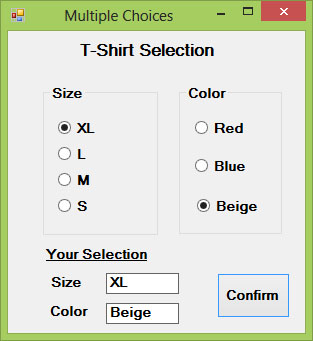

Visual Studio 2013 Lesson 21: Using Radio Button
[Lesson 20] << [Contents] >> [Lesson 22]
Example 21.1
In this example, the user can only choose one T-shirt color. To design the interface, add three radio buttons and name them as RadioRed, RadioGreen and RadioYellow respectively. Besides that, add a button to confirm the chosen color and a label control to display the chosen color. Name the button as BtnConfirm and the label as LblDisplay. We use the If…Then…Else decisions making structure to construct the program. The state of the radio button is indicated by its checked property.
The code:
Private Sub BtnConfirm_Click(sender As Object, e As
EventArgs) Handles BtnConfirm.Click
Dim Tcolor As String
If RadioRed.Checked Then
Tcolor = “Red Color”
LblDisplay.ForeColor = Color.Red
ElseIf RadioGreen.Checked Then
Tcolor = “Green Color”
LblDisplay.ForeColor = Color.Green
Else
Tcolor = “Yellow Color”
LblDisplay.ForeColor = Color.Yellow
End If
LblDisplay.Text = Tcolor
End Sub
The Runtime Interface
{kind=link}
Example 21.2
Although the user may only select one item at a time, he may make more than one selection if those items belong to different categories. For example, the user wishes to choose T-shirt size and color, he needs to select one color and one size, which means one selection in each category. In this case, we need to group the radio buttons together according to the categories. This is easily achieved in Visual Studio 2013 using the Groupbox control under the containers categories.
In the Visual Studio 2013 IDE, after inserting the Groupbox from the tool box into the form, you can proceed to insert the radio buttons into the Groupbox. Only the radio buttons inside the Groupbox are mutually exclusive, they are not mutually exclusive with the radio buttons outside the Groupbox. In this example, the user can select one color and one size of the T-shirt. To design the interface, insert two group boxes. In the first group box, add four radio buttons and name them as RadioXL, RadioL, RadioM and Radio S respectively. In the second group box, add three radio buttons and name them RadioRed, RadioBlue and RadioBeige respectively. Besides that, insert two label control to display the chosen size and color, name them LblSize and LblColor respectively. Finally, add a button and name it as BtnConfirm. In the code, we shall declare two variables, TSize to indicate the T-shirt size and TColor ro indicate the T-shirt color.
The Code
Private Sub BtnConfirm_Click(sender As Object, e As
EventArgs) Handles BtnConfirm.Click
Dim TSize, TColor As String
If RadioXL.Checked Then
TSize = “XL”
ElseIf RadioL.Checked Then
TSize = “L”
ElseIf RadioM.Checked Then
TSize = “M”
Else : TSize = “S”
End If
If RadioRed.Checked Then
TColor = “Red”
ElseIf RadioBlue.Checked Then
TColor = “Blue”
Else : TColor = “Beige”
End If
LblSize.Text = TSize
Lblcolor.Text = TColor
End Sub
The Runtime Interface
Figure 21.2
{kind=link}